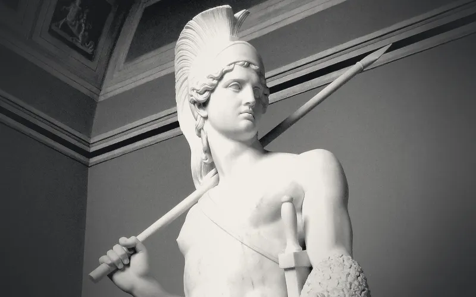

Criada por uma ursa
O pai queria um menino e deixou a recém-nascida no monte. Uma ursa a amamentou até que caçadores a encontraram e a criaram entre eles.
Apolodoro, Biblioteca III HEROÍNA
HEROÍNA
Ἀταλάντη
Abandonada pelo pai, que queria um filho homem, foi amamentada por uma ursa e criada por caçadores. Tornou-se a caçadora mais veloz da Grécia.
Que nota você dá? Clique nos cerberinhos:
 1 ★
2 ★
3 ★
4 ★
5 ★
1 ★
2 ★
3 ★
4 ★
5 ★
Uma mortal que corria mais que qualquer homem. Eu tenho quatro patas e três cabeças, e mesmo assim não apostaria corrida com ela.
O pai queria um menino e deixou a recém-nascida no monte. Uma ursa a amamentou até que caçadores a encontraram e a criaram entre eles.
Apolodoro, Biblioteca IIIOs maiores heróis se reuniram para caçar o javali enviado por Ártemis. A primeira flecha a acertá-lo foi a de Atalanta, e Meleagro lhe deu a pele como prêmio.
Apolodoro, Biblioteca I; Ovídio, Metamorfoses VIIIAtalanta só se casaria com quem a vencesse na corrida. Quem perdia, morria. Hipômenes jogou três maçãs de ouro, presente de Afrodite. Ela parou para pegá-las e perdeu.
Ovídio, Metamorfoses X“Exposta pelo pai, que desejava filhos homens, foi amamentada por uma ursa, até que caçadores a encontraram e a criaram.”
Apolodoro, Biblioteca III (tradução livre)

Ἰάσων
Liderou os Argonautas na busca pelo Velocino de Ouro.

Θησεύς
Herói de Atenas que matou o Minotauro com a ajuda de Ariadne.

Ἡρακλῆς
Filho de Zeus e Alcmena, cumpriu os doze trabalhos. No último, me levou do Submundo.